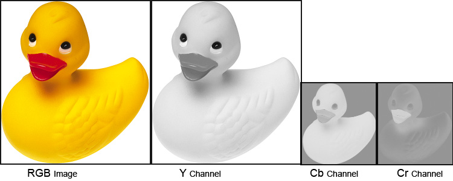
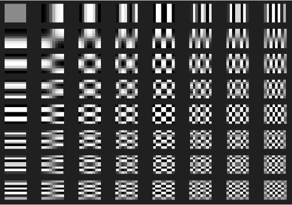
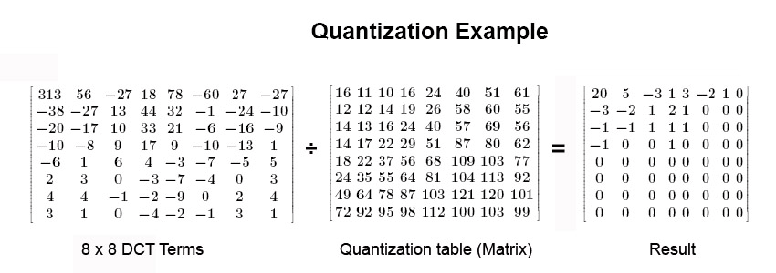
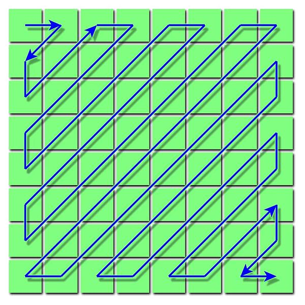

Thema
Das Thema, welches ich in diesem Seminar behandeln werde, ist das JPEG-Verfahren, ein Algorithmus zur Kompression von digitalen Standbildern. Dateiformate für solche Bilder sind unter anderen JPG und JPEG.
Theoretische Grundlagen
Die Idee der Datenkompression ist das Reduzieren von digitalen Daten, sodass der benötigte Speicher für diese möglichst gering ausfällt, damit Platz gespart wird oder auch die Übertragungsdauer verringert wird.
Mittlerweile unterscheiden wir im Fachgebiet der Datenkompression zwischen verlustbehafteten und verlustfreier Kompression (lossy/lossless compression auf Englisch). Wie die Namen bereits verraten, wird bei der verlustbehafteten Kompression auf Teile des Datensignals verzichtet, da sie gegebenenfalls irrelevant für das bestimmte Anwendungsgebiet ist. Das besondere bei der verlustfreien Datenkompression ist, dass das Signal nach dem Kodieren und Dekodieren zu 100% wiederhergestellt wird.
Ebenso gibt es noch die fraktale Übertragung, welche nicht all zu viele Anwendungsgebiete im Alltag findet, was sich aber im Laufe der Zeit etablieren kann. Hierfür werden die Daten zu bestimmten Formeln kodiert, welche dann weniger Speicherplatz verbrauchen, und dann beim Dekodieren gelöst werden.
Die JPEG Kompression ist wahrscheinlich das beliebteste Beispiel für ein Verfahren zur verlustbehafteten Datenkompression. Die JPEG-Norm, welche vom Gremium Joint Photographic Experts Group entwickelt wurde, beschreibt ein Verfahren zur Komprimierung von Bilddateien. Das Gremium besteht aus der Zusammenarbeit von ITU, IEC und ISO, welche bereits viele Standards gesetzt haben.
Der Sinn vom JPEG Verfahren als verlustbehaftete Datenkompressionsmethode ist es, Bildinformationen zu ignorieren, welche der Mensch sowieso nicht gut erkennen kann. So ist der Mensch zwar sehr gut darin, Kontraste und Helligkeitsunterschiede zu erkennen, weshalb diese so gut wie immer gespeichert bleiben, jedoch sind Farbunterschiede für uns schwieriger zu erkennen, deshalb sind diese das erste was bei der Kompression weggelassen wird.
Verfahren Beschreibung
Bei der JPEG Kompression wird ein Digitalbild als Eingabe verwendet und es wird nach folgenden Schritten ein neues, komprimiertes Digitalbild ausgegeben.
Schritt 1: Farbmodellumrechnung
Da bei typischen Computerbildern die Farben als RGB-Werte gespeichert sind, wir als Menschen aber (wie oben bereits erwähnt) viel mehr die Helligkeitsunterschiede erkennen, müssen wir für die Kompression die Helligkeitsinformation und die Farbinformationen trennen. Das Farbmodell, welches in JPEG verwendet wird ist YCbCr, welches die Helligkeit als einzelnen Wert (Y) speichert und zu dem man vom RGB-Modell sehr leicht, wenn aber auch nicht ganz genau umwandeln kann.
Quelle: https://de.wikipedia.org/wiki/JPEG#Farbmodellumrechnung

Quelle: Robert Stocker
Die Auflösung der Cb und Cr-Kanäle wird hier je nach Verfahren verkleinert, um noch mehr Platz zu sparen, das muss aber nicht immer passieren.
Schritt 2: Blockbildung und diskrete Kosinustransformation (DCT)
Nun transformieren wir unsere drei erhaltenen Komponenten Y, Cb und Cr. Der Prozess ist für alle analog, also benutze ich mal den Helligkeitsbereich Y als Beispiel.
Das gesamte Bild wird in eine 8x8-Matrix von Blöcken aufgeteilt, wovon dann jeder Block mithilfe der diskreten Kosinustransformation zu einer Menge von 64 Werten kommt. Jeder dieser Werte ist die Stärke einer Frequenzkomponente (siehe unten), welche von schwach zu stark gehen, je weiter man nach rechts und/oder nach unten in der Frequenzmatrix geht.

Quelle: Robert Stocker
Die 64 Werte, die hier als Ergebnis erhalten werden, sind ebenso eine Matrix, welche repräsentieren, wie oft eine jeweilige Frequenzkomponente „benutzt“ wird.
Schritt 3: Quantisierung
Nun wird quantisiert. Die Quantisierung ist der Grund für dein meisten Verlust bei dieser Kompression.
Die Ergebnismatrix von jedem Block aus Schritt 2 wird nämlich durch die Quantisierungsmatrix dividiert. Diese hat größere Werte unten rechts, wo (wie wir von Schritt 2 wissen) die Komponenten mit den höheren Frequenzen liegen, da wir als Menschen mehr auf Informationen mit niedrigeren Frequenzen achten.

Quelle: Robert Stocker
Im Demonstrations-Kit kann man diese Matrix entweder manuell bearbeiten oder mithilfe eines Qualitäts-Sliders, welche diese Matrix dann streckt oder staucht.
Schritt 4: Umsortierung und Entropeenkodierung
Die Ergebnismatrix der Quantisierung wird nun nach einer Zickzack-Form sortiert, und als Array eingespeichert. Diese Form wird verwendet, da die Nullen in der Ergebnismatrix oft unten rechts sind und wir später Run-Length Encoding verwenden, um das Ergebnis noch weiter zu komprimieren.

Quelle: Wikipedia
{kind=link}
Der letzte Schritt ist nun eine verlustfreies Entropiekompressionsverfahren zu benutzen, oft ist es die Huffman-Kompression. Nachdem dies für alle Blöcke gemacht wurde, ist die Kompression erfolgt und wir haben ein JPEG-Kodiertes Bild.
Um das daraus entstandene Bild dann zu dekodieren, werden diese Schritte invers ausgeführt. Diese bestehen aus der Entropiedekodierung, Umsortierung, Requantisierung, Inverse DCT, Farbmodellumrechnung von YCbCr zu RGB (oder anderen Farbmodellen).
Anwendungsgebiet
Das Anwendungsgebiet der JPEG-Kompression liegt ganz klar bei der digitalen Bildverarbeitung.
Zum einen unterstützt jedes relevante Betriebssystem JPEG-Bilddateien und sie sind neben PNG das beliebteste Format, um Bilder zu versenden oder zu speichern. Und dafür, dass dieses Format 1992 entwickelt wurde, ist das ziemlich erstaunlich in unserer Welt mit schnelllebiger Technologie.
Qualitätsbewertung über das Verfahren
Natürlich ist die JPEG-Kompression nicht perfekt, so wie jedes verlustbehaftete Verfahren, jedoch hat es einen Grund, dass es bis heute noch so häufig benutzt wird, und zwar spart man eine Menge Platz, während die wahrnehmbare Qualität des Bildes noch sehr gut bleibt. Und obwohl Speicher mittlerweile nicht so teuer ist, speichern Menschen immer mehr Daten, weshalb ein Kompressionsverfahren wie JPEG immer noch relevant bleibt.